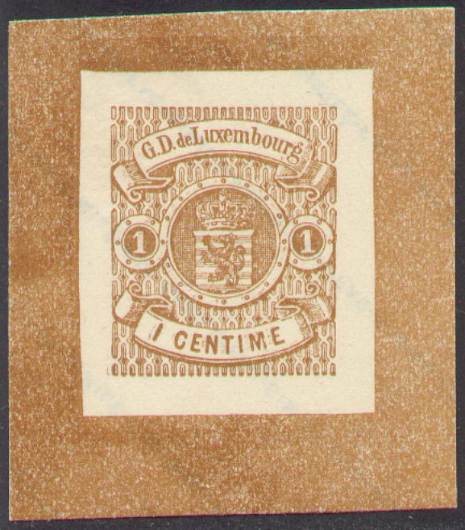
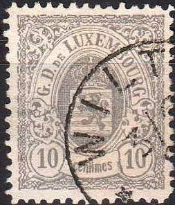

Distinguishing characteristics of the Fournier forgeries: a small part of the background pattern has been 'forgotten' just above the 'D' of 'G.D. de'.
Return To Catalogue - Luxembourg 1859-1881, forgeries, part 1 - Luxembourg 1859-1881, forgeries, part 2 - Luxembourg 1859-1881
Note: on my website many of the
pictures can not be seen! They are of course present in the
catalogue;
contact me if you want to purchase it.
Click here for Luxembourg
1859-1881, forgeries, part 1
or Luxembourg 1859-1881, forgeries, part 2
Two forgeries of my own collection (1 c and 20 c) and some others, these are taken from a Fournier album (they have the words 'FAC-SIMILE' printed diagonally at the back):

Distinguishing characteristics of the Fournier forgeries: a small
part of the background pattern has been 'forgotten' just above
the 'D' of 'G.D. de'.

The left and right upper flowery ornaments are different in the
Fournier forgeries.
I have seen a 1 c Fournier forgery with cancel
'ECHTERNACH 2 DEC 66 *', but many other cancels were used by
Fournier, such as:
'* WILTZ * 3/6 83 2-3 S'
'* ECHTERNACH * 18/5 82 5-2 M'
'* GREVENMACHER * 25/8 4-5 S' (the year was probably added in
later)
'* LUXEMBOURG-VILLE * VI 23 11 89 8 9M.' in a double circle
'* LUXEMBOURG 30/9 79 7-6N' in a single circle
'LUXEMBOURG DEC' in a double circle (the date was probably added
in later)
'HOSINGEN 21 75' in a double circle (month added later; I've seen
'JUIN' and 'AOUT')
'WILTZ' in a double circle (the year and date were probably added
in later)
'REMICH' in a double circle (the year and date were probably
added in later)
A rectangle consisting of parallel slanting lines.

The dates of some cancels were apparently added later (Wiltz and
Echternach etc.)
Forged Fournier overprints.
Some Fournier forgeries from the Fournier album:

Fournier forgery with a blue 'HOSINGEN 21 .. 75' cancel, but now
with 'JUIN' instead of the above shown 'AOUT'.
The following two forgeries have the cancel 'LUXEMBOURG 6 DEC 71' (probably Fournier forgeries?):
A small part of the background pattern has been 'forgotten' just above the 'D' of 'G.D. de' in the above 2 c forgery (this is a Fournier forgery).
Some forgeries (all of them Fournier forgeries):

Fournier forgeries with 'WILTZ 3/6 83 2-3S' cancel.

Fournier forgeries with 'LUXEMBOURG 8/11 77 7-8 N' cancels.


Two Fournier forgeries with 'REMICH 8 MAI 61' cancels.
Imperforate and rouletted Fournier forgeries can be quite dangerous. Perforated Fournier forgeries are easier to recognize, since the perforation holes are smaller than in the genuine stamps. The perforation holes are also not evenly spaced as in the genuine issues. I've also seen a 1 c Fournier forgery with a forged 'L' in 3 concentric circles cancel (cancel of Lubeck):


Fournier forgeries with three rings 'L' cancel of Lubeck in black
or blue.

Fournier forgery of the 40 c value, with cancel 'DIEKIRCH 25/2
82' (not listed in the Fournier Album).


Fournier forgery with forged 'OFFICIEL' overprint

Possible Fournier forgeries as well. The genuine 10 c value has
inscription 'ceniimes' instead of 'centimes'.
Fournier also forged the 'UN FRANC.' and 'Un Franc.' on 37 1/2 c brown stamp (sorry, no image available yet).
SPERATI FORGERIES
The forger Sperati also made forgeries of these stamps. These forgeries are quite valuable.
Blackprint of a forged 2 c Sperati forgery (actually enlarged)
Forged cancels as used by Sperati, reduced sizes


Some Sperati forgeries of the 2 c and 37 1/2 c
Distinguishing characteristics of the Sperati 37 1/2 c forgery.
Sperati also made a forgery of the 37 1/2 c value (I've also seen it with the 'REMICH 28 AOUT 62' , the 'LUXEMBOURG 1 JUIN 61' cancel and the 'PD' cancel). The 37 1/2 c is a very good forgery, but can be dinstiguished by the break in the left part of the 'n' and the break in the 's' in the word 'centimes'. There is a coloured dot at the bottom of the '3' as well as in the right hand side of the '1' in the right hand side '37 1/2'. The top part of the upstroke of the '7' of the left hand side '37 1/2' is almost broken by a white spot.
Stamps - Timbres-Poste - Briefmarken


{kind=link}
{kind=link}
{kind=link}